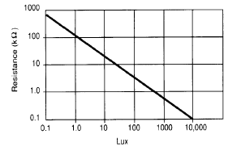
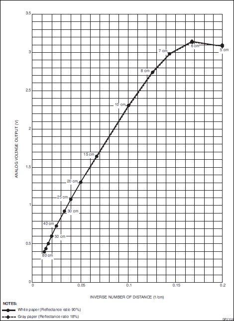

|
Photodetectors measure the intensity of electromagnetic radiation. If they are sensitive in the spectrum of visual light (wavelength between 300 nm and 700 nm), they are also called light sensors. If they are responsive in the infrared region (wavelength between 700 nm and 1 mm) they are called infrared sensors (IR sensor). At room temperature objects emit thermal radiation in the 8 to 35 um band. |
Light Sensors |
|
Light sensors are used to measure the intensity of visual light (also called luminosity). Most light sensors consist of a photoconductive cell whose resistance depends on the luminosity (Light Dependent Resistor = LDR, also called photoresistor). The cell is made of a high resistance semiconductor. Incident photons are absorbed by electrons that jump from the valence to the conduction band and so increase the conductibility (or reduce the resistance R) of the cell. Within a reasonable range of the luminosity L, the characteristics can be expressed as
This dependency corresponds to a line in a double logarithmic plot:  Photocells are widely used in photo cameras to select the right diaphragm and shutter speed. Here the analog value is of importance. In a light barrier application, only two states are considered: Bright or Dark. The crossover value between the two states is also called trigger level, because the state change normally triggers ("fires") some action. Aim: Circuitry:
Program:[►] # LightSensor.py # Light barrier with LDR sensor import smbus import time TRIGGER_LEVEL = 300 # user selectable def readData(port = 0): if port == 0: adc_address = 0x48 elif port == 1: adc_address = 0x4D rd = bus.read_word_data(adc_address, 0) data = ((rd & 0xFF) << 8) | ((rd & 0xFF00) >> 8) data = data >> 2 return data print "starting..." bus = smbus.SMBus(1) state = "DARK" while True: v = readData(1) # adapt to your ADC (0 or 1) if v >= TRIGGER_LEVEL and state == "DARK": state = "BRIGHT" print "BRIGHT event" if v < TRIGGER_LEVEL and state == "BRIGHT": state = "DARK" print "DARK event" Remarks: |
Hardware Threshold Detection |
|
The cross-over of a trigger level can be detected by a simple electronic circuit called a Schmitt-trigger. The output is a LOW or HIGH signal and may be directly fed into a standard GPIO port without any ADC conversion. This simplifies the program considerably and requires much less processing power, especially in a robot application where more than one IR or LDR based proximity detectors are needed. A classical circuit uses an operational amplifier (OpAmp). Because the output voltage is proportional (with a high gain factor) to the difference of the input voltages at the non-inverting and inverting inputs, but limited to the supply voltage, the output voltage is rapidly changing when the input voltage difference crosses zero. So when the OpAmp is driven by a single voltage supply VCC the output is at digital level LOW or HIGH. A potentiometer is used to set the luminosity where the cross-over takes place. A simple white LED may be used as light source for the reflecting light.
|
Infrared Sensors / Distance (Proximity) Sensors |
|
Infrared sensors are also used for light barriers, where a infrared source emits light not visible to the human eye. This may present some advantages over devices where the light beam is visible. Because many materials reflects infrared waves, a reflective light barrier are widely use in all kind of distance detectors. For short distances (1 - 100 cm) the light source is a photodiode (IR LED) that emits IR light around 1000 nm and a photodiode or phototransistor captures the reflection and translates the light intensity to a voltage
Circuitry:
Since the input-output relationship is completely non-linear, it is an algorithmic problem how to transform the voltage to an approximate distance. As you may suggest, some kind of interpolation is necessary. We will not do right now and just display the output voltage of the sensor. In many proximity sensor applications, the absolute value of the distance is not of importance because the sensor is used to trigger an action, when the distance cross a certain level (from far to near or vice versa). In this example we turn a light or buzzer on, when the distance becomes too small (e.g. to stop a moving robot near an obstacle). Program:[►] # Infrared1.py # using the PCF8591 ADC import smbus import time import RPi.GPIO as GPIO P_LED = 22 TRIGGER_LEVEL = 25 DT = 0.2 def setup(): GPIO.setmode(GPIO.BOARD) GPIO.setup(P_LED, GPIO.OUT) def beep(n): for i in range(n): GPIO.output(P_LED, GPIO.HIGH) time.sleep(0.05) GPIO.output(P_LED, GPIO.LOW) time.sleep(0.05) bus = smbus.SMBus(1) # RPi revision 2 (0 for revision 1) i2c_address = 0x48 setup() beep(3) # to say we are ready while True: data = bus.read_byte_data(i2c_address, 0) # read ch0 if data > TRIGGER_LEVEL: beep(2) time.sleep(DT)
Again the output voltage u is not in a simple relationship to the distance d as we see from from the data sheet. But u = f(1/d) may be approximated by a straight line u = mx + b with  Our program shows this approximated distance at the terminal and (if available) on a attached display. Program:[►] # Infrared2.py # GP2Y0A21YK sensor with PCF8591 ADC import smbus import time from py7seg import Py7Seg # xxx bus = smbus.SMBus(1) # RPi revision 2 (0 for revision 1) i2c_address = 0x48 ps = Py7Seg() # xxx # u = mx + b, x = 1/d m = 19.8 b = 0.228 while True: data = bus.read_byte_data(i2c_address, 0) # use CH0 u = data / 255 * 5 d = int(m / (u - b)) print "d =" ,d, "cm" ps.showText("%4d" %d) # xxx time.sleep(0.1) Remarks: |